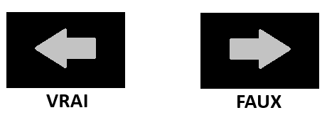

Votre tâche consistera à lire un texte décrivant un voyage. De temps à autre, des pop-ups publicitaires peuvent apparaître à l'écran, et pour reprendre la lecture, il vous suffit de fermer la fenêtre publicitaire.
Chaque page contiendra un texte unique, et vous devrez cliquer sur "suivant" après avoir terminé la lecture. Il n'y a pas de limite de temps, et il n'est pas possible de revenir en arrière.
Sur la page suivante, un mot sera affiché au milieu de l'écran. Utilisez la flèche directionnelle gauche si vous l'avez lu dans le paragraphe précédent, et la flèche directionnelle droite si vous ne l'avez pas lu.
Ceci est la page de test.
Chaque pays du monde a ses subtilités. Des informations souvent implicites et pourtant bien utiles pour voyager en toute sérénité, éviter les impairs et gagner un temps précieux lors de votre voyage en Turquie. À cheval entre deux continents (à gauche l’Europe, à droite l’Asie), quelle merveille que ce pays d’une richesse inépuisable, aux influences mêlées, à l’incroyable diversité de paysages, de cultures et de traditions. Une diversité qui impose d’être au fait de quelques tips.Que vous visiez Istanbul et le remarquable Bosphore, la capitale Ankara en Anatolie centrale, la Cappadoce – la Riviera turque – ou encore Bodrum, bordée par la mer Égée, le voyage en Turquie reste facile.
Bodrum
L’arrivée par l’aéroport d’Istanbul donne le ton. À l’image du pays, tourné vers le futur, il sera à terme le plus grand aéroport du monde. Les réseaux aériens, mais également autoroutiers, sont très bien développés. Tout comme les distributeurs, présents même dans le plus petit village de Cappadoce. Vous trouverez donc des livres turques (TL) partout. Et s’il est très aisé de régler ses achats par carte bancaire, vous veillerez à toujours avoir de la monnaie sur vous, car le pourboire est une pratique courante. Ainsi, les guides locaux s’attendent à une gratification allant de 200 à 250 TL (en billets) par jour et par personne. Pour le chauffeur, entre 100 et 130 TL. Les chauffeurs de taxis arrondiront toujours le montant de la course ou ne rendront pas forcément la monnaie, d’où l’importance de demander à ce que le compteur soit allumé. Pour le bagagiste de l’hôtel, prévoir 20 à 30 TL.
Livres
S’agissant des hôtels, vous remarquerez systématiquement le portrait de Mustafa Kemal, dit Atatürk, premier président de la République de Turquie de 1923 à 1938, fondateur de la Turquie moderne. Chaque 10 octobre, à 09h05, une minute de silence est respectée dans tout le pays pour commémorer sa mort. Dans les grandes villes, bus et taxis sont stoppés net. Les conducteurs sortent de leur véhicule pour se tenir debout. Tout est alors à l’arrêt. Au restaurant, vous laisserez au moins 10% de la note. Avant cela, vous aurez goûté à la gastronomie locale, délicieuse : mezzés, kebabs, cuisine méditerranéenne à l’huile d’olive, au beurre quand elle tient ses influences de la mer Noire…
Yogurt
À moins de tester toutes ces saveurs dans la rue : à Istanbul, la street-food est prisée de tous les gourmands. À noter : pas de restrictions sur les fruits et légumes, à condition qu’ils soient lavés. L’eau du robinet n’étant pas potable, car trop chlorée, ayez toujours une bouteille d’eau dans votre chambre ou lors de vos différentes sorties. Côté alcool, secteur en pleine expansion, la Turquie, étonnamment, produit de nombreuses spécialités locales. Il est néanmoins cher car très taxé. À boire, avec modération, le raki, l’ouzo turc, à marier avec un salgam suyu, une boisson fermentée à base de carottes violettes, de blé, de sel et de levure (existe en version épicée ou douce).
Légumes
Autres curiosités : l’ayran, nectar très rafraîchissant mêlant yaourt, eau et sel (existe en version fermée, industrielle, “kapali”, ou en version ouverte, fait maison avec un goût plus prononcé, “açik”). En hiver, testez le sahlep, une boisson chaude que l’on peut acheter à des vendeurs ambulants. Il s’agit d’un “lait d’orchidée” à saupoudrer de cannelle. D'ailleurs, boissons ou nourriture, sur les marchés ou dans les bazars, n’hésitez pas à goûter avant d’acheter. Ici c’est habituel et cela vous permettra de tester la qualité avant de vous lancer !
Fruits
Une fois dans un bazar, l’envie vous prendra sûrement de ramener quelques cadeaux en souvenir. Explorer l’artisanat du pays relève de la mission incontournable. C’est en Cappadoce qu’il est à son apogée. Et les bazars d’Istanbul et d’Izmir recèlent les plus belles pièces (tapis à double nœuds, poteries, objets en onyx, textiles, cuir, cuivre…). Acheter un tapis n’est pas difficile. Il suffit de donner un acompte. Vous paierez le reste à la livraison. Attention néanmoins aux frais de douane et de TVA. Sachez également que si l’on ne marchande pas dans les magasins du quotidien (on paie le prix indiqué sur l’étiquette), la négociation a bel et bien cours dans les bazars et chez les antiquaires. Une baisse de 30% est une bonne base. Pour autant, certains commerces du Grand Bazar ou du Bazar égyptien, souvent les plus luxueux, ont des prix fixes.
Onyx
Merci de votre participation !
Veuillez appeler l'expérimentateur.
Merci de votre participation ! Veuillez appeler l'expérimentateur.